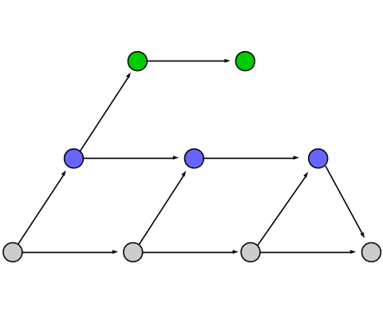

1-2 History and Branching 1-2 History and Branching
1-2 History and Branching 1-2 History and BranchingOne of the key aspects to version control is that you are, well, able to control the version of your software.
For example, if you make a commit that you later discover breaks the code, it is important that you be able to go back into your project's history and undo that change.
Git provides a number of tools that you can use to this effect (one of which, git reset, you have already been exposed to).
In addition to that, git provides another feature for which it is well-known: branching. In addition to history management, this lesson will teach you what branching is all about, how it is related to history, and how to effectively use branches in your project.
As you make commits to your repository, git adds each commit to the repository's history. You have full access to the repository's history, and you can use it to your advantage when something goes wrong.
To visualize how git handles history, we use branch diagrams, which are arguably the most commonly used (and most helpful) diagrams associated with git.
A branch diagram may look something like this:
In this diagram, each dot represents a commit. Every horizontal arrow represents a new commit being made. Every diagonal arrow represents a merge.
However, for now, we're just going to look at how history works, so we're going to ignore merge commits for the moment.
| ← 1-1 Git Basics | 1-2 History and Branching | Chapter 2: Use → |